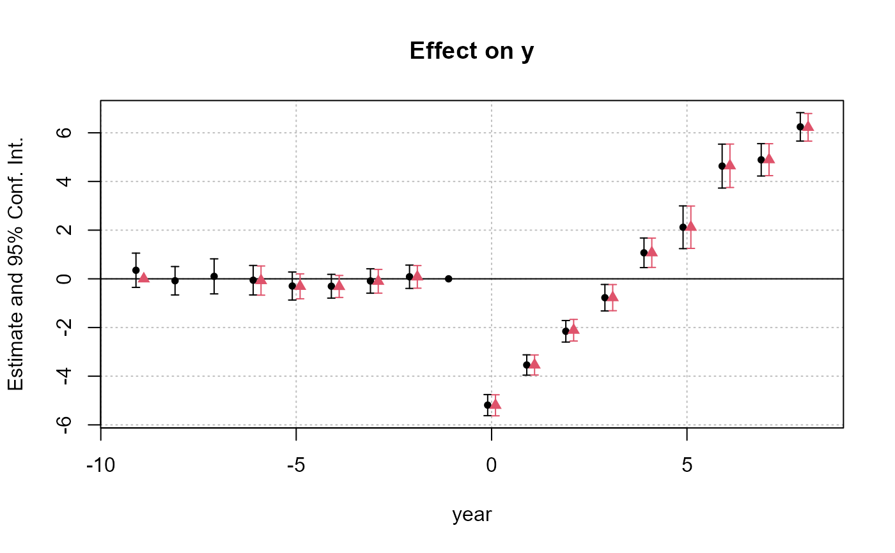
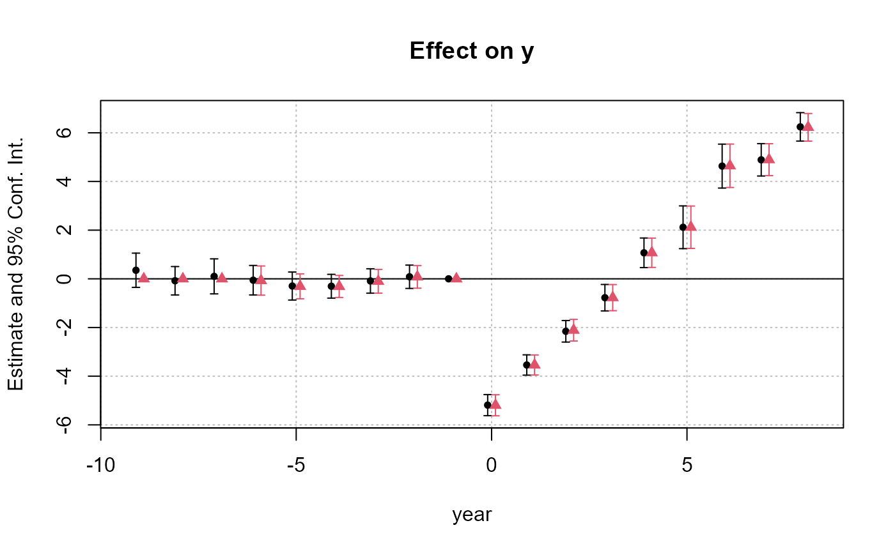

User-level method to implement staggered difference-in-difference estimations a la Sun and Abraham (Journal of Econometrics, forthcoming).
sunab(
cohort,
period,
ref.c = NULL,
ref.p = -1,
bin,
bin.rel,
bin.c,
bin.p,
att = FALSE,
no_agg = FALSE
)
sunab_att(cohort, period, ref.c = NULL, ref.p = -1)A vector representing the cohort. It should represent the period at which the treatment has been received (and thus be fixed for each unit).
A vector representing the period. It can be either a relative time period (with negative values representing the before the treatment and positive values after the treatment), or a regular time period. In the latter case, the relative time period will be created from the cohort information (which represents the time at which the treatment has been received).
A vector of references for the cohort. By default the never treated cohorts are taken as reference and the always treated are excluded from the estimation. You can add more references with this argument, which means that dummies will not be created for them (but they will remain in the estimation).
A vector of references for the (relative!) period. By default the first relative period (RP) before the treatment, i.e. -1, is taken as reference. You can instead use your own references (i.e. RPs for which dummies will not be created -- but these observations remain in the sample). Please note that you will need at least two references. You can use the special variables .F and .L to access the first and the last relative periods.
A list of values to be grouped, a vector, or the special value "bin::digit". The binning will be applied to both the cohort and the period (to bin them separately, see bin.c and bin.p). To create a new value from old values, use bin = list("new_value"=old_values) with old_values a vector of existing values. It accepts regular expressions, but they must start with an "@", like in bin="@Aug|Dec". The names of the list are the new names. If the new name is missing, the first value matched becomes the new name. Feeding in a vector is like using a list without name and only a single element. If the vector is numeric, you can use the special value "bin::digit" to group every digit element. For example if x represent years, using bin="bin::2" create bins of two years. Using "!bin::digit" groups every digit consecutive values starting from the first value. Using "!!bin::digit" is the same bu starting from the last value. In both cases, x is not required to be numeric.
A list or a vector defining which values to bin. Only applies to the relative periods and not the cohorts. Please refer to the help of the argument bin to understand the different ways to do the binning (or look at the help of bin).
A list or a vector defining which values to bin. Only applies to the cohort. Please refer to the help of the argument bin to understand the different ways to do the binning (or look at the help of bin).
A list or a vector defining which values to bin. Only applies to the period. Please refer to the help of the argument bin to understand the different ways to do the binning (or look at the help of bin).
Logical, default is FALSE. If TRUE: then the total average treatment effect for the treated is computed (instead of the ATT for each relative period).
Logical, default is FALSE. If TRUE: then there is no aggregation, leading to the estimation of all cohort x time to treatment coefficients.
If not used within a fixest estimation, this function will return a matrix of interacted coefficients.
This function creates a matrix of cohort x relative_period interactions, and if used within a fixest estimation, the coefficients will automatically be aggregated to obtain the ATT for each relative period. In practice, the coefficients are aggregated with the aggregate.fixest function whose argument agg is automatically set to the appropriate value.
The SA method requires relative periods (negative/positive for before/after the treatment). Either the user can compute the RP (relative periods) by his/her own, either the RPs are computed on the fly from the periods and the cohorts (which then should represent the treatment period).
The never treated, which are the cohorts displaying only negative RPs are used as references (i.e. no dummy will be constructed for them). On the other hand, the always treated are removed from the estimation, by means of adding NAs for each of their observations.
If the RPs have to be constructed on the fly, any cohort that is not present in the period is considered as never treated. This means that if the period ranges from 1995 to 2005, cohort = 1994 will be considered as never treated, although it should be considered as always treated: so be careful.
If you construct your own relative periods, the controls cohorts should have only negative RPs.
You can bin periods with the arguments bin, bin.c, bin.p and/or bin.rel.
The argument bin applies both to the original periods and cohorts (the cohorts will also be binned!). This argument only works when the period represent "calendar" periods (not relative ones!).
Alternatively you can bin the periods with bin.p (either "calendar" or relative); or the cohorts with bin.c.
The argument bin.rel applies only to the relative periods (hence not to the cohorts) once they have been created.
To understand how binning works, please have a look at the help and examples of the function bin.
Binning can be done in many different ways: just remember that it is not because it is possible that it does makes sense!
# Simple DiD example
data(base_stagg)
head(base_stagg)
#> id year year_treated time_to_treatment treated treatment_effect_true
#> 2 90 1 2 -1 1 0
#> 3 89 1 3 -2 1 0
#> 4 88 1 4 -3 1 0
#> 5 87 1 5 -4 1 0
#> 6 86 1 6 -5 1 0
#> 7 85 1 7 -6 1 0
#> x1 y
#> 2 -1.0947021 0.01722971
#> 3 -3.7100676 -4.58084528
#> 4 2.5274402 2.73817174
#> 5 -0.7204263 -0.65103066
#> 6 -3.6711678 -5.33381664
#> 7 -0.3152137 0.49562631
# Note that the year_treated is set to 1000 for the never treated
table(base_stagg$year_treated)
#>
#> 2 3 4 5 6 7 8 9 10 10000
#> 50 50 50 50 50 50 50 50 50 500
table(base_stagg$time_to_treatment)
#>
#> -1000 -9 -8 -7 -6 -5 -4 -3 -2 -1 0 1 2
#> 500 5 10 15 20 25 30 35 40 45 45 40 35
#> 3 4 5 6 7 8
#> 30 25 20 15 10 5
# The DiD estimation
res_sunab = feols(y ~ x1 + sunab(year_treated, year) | id + year, base_stagg)
etable(res_sunab)
#> res_sunab
#> Dependent Var.: y
#>
#> x1 0.9947*** (0.0184)
#> year = -9 0.3518 (0.3591)
#> year = -8 -0.0790 (0.2975)
#> year = -7 0.1010 (0.3670)
#> year = -6 -0.0564 (0.3089)
#> year = -5 -0.2953 (0.2940)
#> year = -4 -0.3037 (0.2491)
#> year = -3 -0.0884 (0.2558)
#> year = -2 0.0847 (0.2443)
#> year = 0 -5.188*** (0.2211)
#> year = 1 -3.540*** (0.2128)
#> year = 2 -2.155*** (0.2258)
#> year = 3 -0.7750** (0.2771)
#> year = 4 1.069*** (0.3104)
#> year = 5 2.118*** (0.4481)
#> year = 6 4.631*** (0.4604)
#> year = 7 4.890*** (0.3394)
#> year = 8 6.244*** (0.2976)
#> Fixed-Effects: ------------------
#> id Yes
#> year Yes
#> _______________ __________________
#> S.E.: Clustered by: id
#> Observations 950
#> R2 0.90982
#> Within R2 0.87641
#> ---
#> Signif. codes: 0 '***' 0.001 '**' 0.01 '*' 0.05 '.' 0.1 ' ' 1
# By default the reference periods are the first year and the year before the treatment
# i.e. ref.p = c(-1, .F); where .F is a shortcut for the first period.
# Say you want to set as references the first three periods on top of -1
res_sunab_3ref = feols(y ~ x1 + sunab(year_treated, year, ref.p = c(.F + 0:2, -1)) | id + year, base_stagg)
# Display the two results
iplot(list(res_sunab, res_sunab_3ref))

# ... + show all refs
iplot(list(res_sunab, res_sunab_3ref), ref = "all")

#
# ATT
#
# To get the total ATT, you can use summary with the agg argument:
summary(res_sunab, agg = "ATT")
#> OLS estimation, Dep. Var.: y
#> Observations: 950
#> Fixed-effects: id: 95, year: 10
#> Standard-errors: Clustered (id)
#> Estimate Std. Error t value Pr(>|t|)
#> x1 0.994678 0.018378 54.12293 < 2.2e-16 ***
#> ATT -1.133749 0.205070 -5.52858 2.882e-07 ***
#> ---
#> Signif. codes: 0 '***' 0.001 '**' 0.01 '*' 0.05 '.' 0.1 ' ' 1
#> RMSE: 0.921817 Adj. R2: 0.887984
#> Within R2: 0.876406
# You can also look at the total effect per cohort
summary(res_sunab, agg = "cohort")
#> OLS estimation, Dep. Var.: y
#> Observations: 950
#> Fixed-effects: id: 95, year: 10
#> Standard-errors: Clustered (id)
#> Estimate Std. Error t value Pr(>|t|)
#> x1 0.994678 0.018378 54.122928 < 2.2e-16 ***
#> cohort::2 2.434738 0.286046 8.511690 2.6667e-13 ***
#> cohort::3 1.376610 0.619741 2.221266 2.8734e-02 *
#> cohort::4 0.754376 0.805496 0.936537 3.5140e-01
#> cohort::5 -2.807954 0.386545 -7.264231 1.0810e-10 ***
#> cohort::6 -2.722579 0.595004 -4.575731 1.4486e-05 ***
#> cohort::7 -5.075193 0.567640 -8.940869 3.2825e-14 ***
#> cohort::8 -5.092821 0.350586 -14.526611 < 2.2e-16 ***
#> cohort::9 -7.236730 0.328854 -22.005879 < 2.2e-16 ***
#> cohort::10 -8.711575 0.512805 -16.988071 < 2.2e-16 ***
#> ---
#> Signif. codes: 0 '***' 0.001 '**' 0.01 '*' 0.05 '.' 0.1 ' ' 1
#> RMSE: 0.921817 Adj. R2: 0.887984
#> Within R2: 0.876406
#
# Binning
#
# Binning can be done in many different ways
# binning the cohort
est_bin.c = feols(y ~ x1 + sunab(year_treated, year, bin.c = 3:2) | id + year, base_stagg)
# binning the period
est_bin.p = feols(y ~ x1 + sunab(year_treated, year, bin.p = 3:1) | id + year, base_stagg)
#> NOTE: 1 observation removed because of NA values (RHS: 1).
# binning both the cohort and the period
est_bin = feols(y ~ x1 + sunab(year_treated, year, bin = 3:1) | id + year, base_stagg)
#> NOTE: 1 observation removed because of NA values (RHS: 1).
# binning the relative period, grouping every two years
est_bin.rel = feols(y ~ x1 + sunab(year_treated, year, bin.rel = "bin::2") | id + year, base_stagg)
etable(est_bin.c, est_bin.p, est_bin, est_bin.rel, keep = "year")
#> est_bin.c est_bin.p est_bin
#> Dependent Var.: y y y
#>
#> year = -9 0.3555 (0.3578)
#> year = -8 -0.0805 (0.2966)
#> year = -7 0.1002 (0.3648) 1.048* (0.4725) 1.046* (0.4713)
#> year = -6 -0.0572 (0.3076) 1.142** (0.3399) 1.143** (0.3391)
#> year = -5 -0.2963 (0.2925) 0.3179 (0.3811) 0.3182 (0.3808)
#> year = -4 -0.3037 (0.2478) 0.2338 (0.3841) 0.2330 (0.3839)
#> year = -3 -0.0888 (0.2545) 0.2207 (0.3525) 0.2202 (0.3524)
#> year = -2 0.2447 (0.2306) -0.1542 (0.2967) -0.1545 (0.2966)
#> year = 0 -4.831*** (0.2871) -6.265*** (0.2269) -6.265*** (0.2268)
#> year = 1 -3.343*** (0.2632) -4.868*** (0.2376) -4.868*** (0.2376)
#> year = 2 -1.888*** (0.2664) -3.683*** (0.2754) -3.682*** (0.2755)
#> year = 3 -0.2135 (0.3110) -2.391*** (0.3664) -2.391*** (0.3664)
#> year = 4 1.664*** (0.3837) -0.6738. (0.4027) -0.6734. (0.4026)
#> year = 5 2.696*** (0.5327) -0.3294 (0.5506) -0.3288 (0.5507)
#> year = 6 5.380*** (0.5230) 2.546*** (0.6858) 2.546*** (0.6865)
#> year = 7 6.096*** (0.6931)
#> year = 8
#> Fixed-Effects: ------------------ ------------------ ------------------
#> id Yes Yes Yes
#> year Yes Yes Yes
#> _______________ __________________ __________________ __________________
#> S.E.: Clustered by: id by: id by: id
#> Observations 950 949 949
#> R2 0.90550 0.85070 0.85108
#> Within R2 0.87048 0.79505 0.79567
#>
#> est_bin.rel
#> Dependent Var.: y
#>
#> year = -9 0.5581 (0.3446)
#> year = -8 0.1306 (0.2989)
#> year = -7
#> year = -6 -0.1297 (0.2450)
#> year = -5
#> year = -4 -0.1493 (0.2182)
#> year = -3
#> year = -2 0.1110 (0.2398)
#> year = 0 -4.431*** (0.1902)
#> year = 1
#> year = 2 -1.558*** (0.2173)
#> year = 3
#> year = 4 1.464*** (0.3491)
#> year = 5
#> year = 6 4.642*** (0.3113)
#> year = 7
#> year = 8 6.210*** (0.2810)
#> Fixed-Effects: ------------------
#> id Yes
#> year Yes
#> _______________ __________________
#> S.E.: Clustered by: id
#> Observations 950
#> R2 0.90117
#> Within R2 0.86455
#> ---
#> Signif. codes: 0 '***' 0.001 '**' 0.01 '*' 0.05 '.' 0.1 ' ' 1